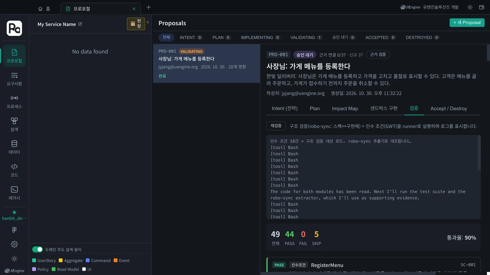
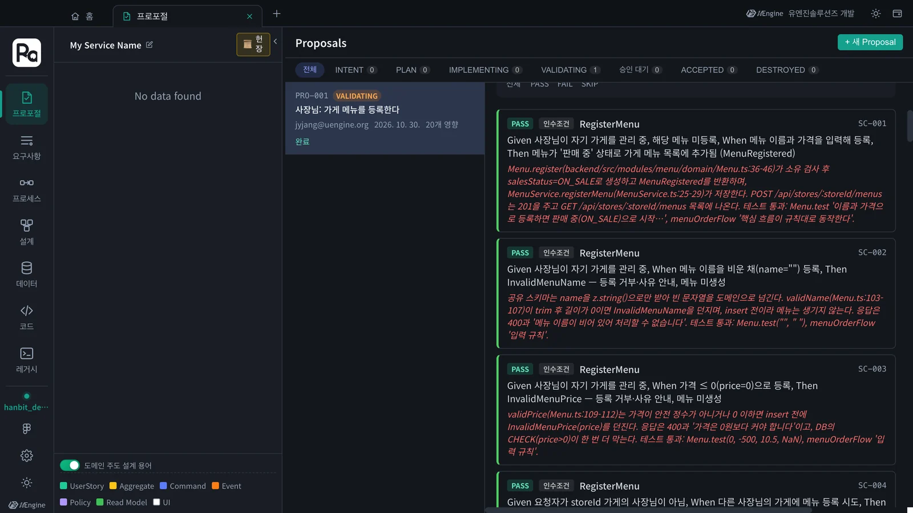
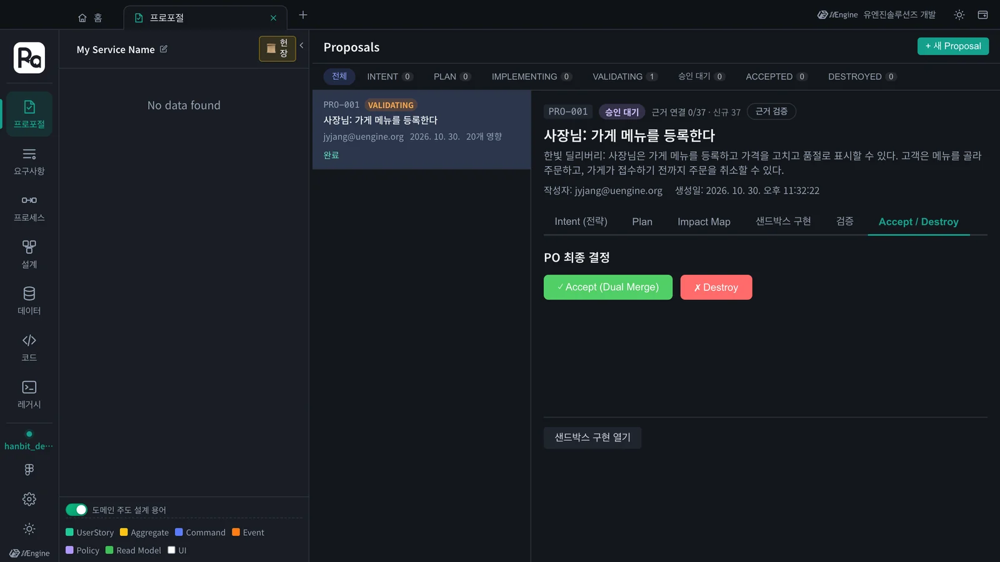
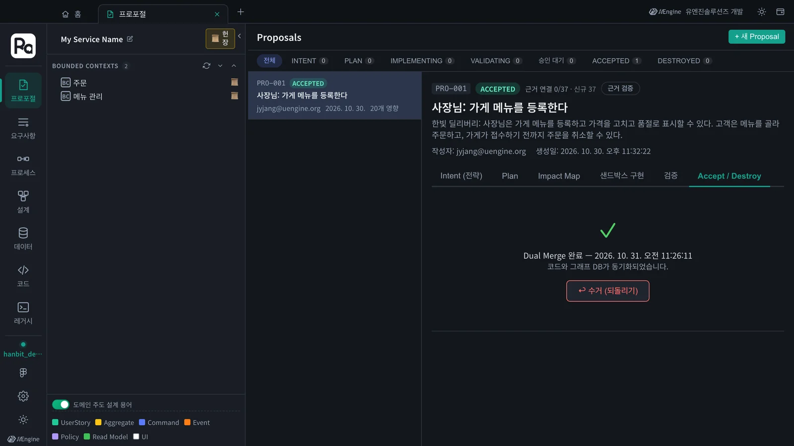

구현이 끝나면 구현 완료 → 검증으로 샌드박스 코드를 설계와 대조합니다. 구조 검증(robo-sync: 설계의 애그리거트 · 커맨드 · 이벤트가 코드에 있는가)과 인수 조건(Given · When · Then이 지켜지는가)을 함께 보고, 통과하면 Accept (Dual Merge)로 코드와 설계 그래프를 한 번에 본체에 합칩니다. 이 튜토리얼에서는 49건 중 44건 통과, 실패 0건이었고 검증부터 수락까지 약 7분 걸렸습니다.
왜 검증하나#
AI가 작업 목록을 다 채웠다고 설계대로 만들어졌다는 보장은 없습니다. 검증은 두 가지를 봅니다.
- 구조 검증 — 전술 설계(5장)의 애그리거트 · 필드 · 커맨드 · 이벤트가 코드에 있는지,
robo-sync추출기로 코드에서 뽑아 설계와 맞춰 봅니다. - 인수 조건 — 전략 설계(3장)의 Given · When · Then마다 코드와 테스트를 읽어 지켜지는지 판정하고, 근거(파일:줄, 통과한 테스트)를 붙입니다.
따라 하기 1 — 검증 실행#
- 진행 막대가 15/15가 되면 샌드박스 구현 칸에 구현 완료 → 검증이 생깁니다. 누릅니다.
- 검증 칸으로 넘어가 로그가 흐릅니다(「인수 조건 18건 + 구조 검증 대상 로드. robo-sync 추출기로 대조합니다…」). 도중에 멈추려면 중지를 누릅니다.
- 이 튜토리얼에서는 약 7분 뒤 결과가 나왔습니다.

따라 하기 2 — 결과 읽기#
| 구분 | 건수 | PASS | FAIL | SKIP |
|---|---|---|---|---|
| 인수 조건 | 18 | 18 | 0 | 0 |
| 구조 검증 | 31 | 26 | 0 | 5 |
| 합계 | 49 | 44 | 0 | 5 |
통과율은 PASS ÷ 전체 = 44 ÷ 49 ≈ 90%입니다.
카드마다 판정, 종류(인수조건 · 구조), 대상(예: RegisterMenu), 시나리오 번호(SC-001)와 근거가 붙습니다. 예를 들어 SC-002 「메뉴 이름을 비운 채 등록하면 InvalidMenuName」의 근거는 validName(Menu.ts:103-107)이 공백을 지운 뒤 빈 이름이면 오류를 던지고, 테스트 Menu.test("", " ")가 통과했다는 것입니다.

SKIP은 무엇인가#
SKIP 5건은 모두 구조 검증이었고 이유가 같았습니다. ChangeMenuPrice, MarkMenuSoldOut, ReleaseMenuSoldOut, AcceptOrder, CancelOrder 커맨드가 따로 된 커맨드 타입 없이 서비스 메서드 인자(acceptOrder(principal, orderId))와 zod 스키마로만 표현되어, 추출기가 입력 필드를 뽑지 못했습니다. 검증기는 코드를 직접 읽어 「입력은 명세와 일치한다」고 적었지만, 자동 대조가 아니라서 PASS 대신 SKIP으로 남겼습니다.
SKIP을 줄이려면
커맨드를 ChangeMenuPriceCommand { menuId, price }처럼 타입으로 두면 추출기가 읽을 수 있습니다. 팀 규칙으로 정하고 싶다면 헌장(4장)이나 구현 스킬(10장)에 적어 두세요.
따라 하기 3 — 수락(Dual Merge)#
- Accept / Destroy 칸을 엽니다. 「PO 최종 결정」에 ✓ Accept (Dual Merge)와 ✗ Destroy가 있습니다.
- 실패(FAIL)가 있으면 「실패 항목을 인지하고 Accept를 진행합니다」 확인란을 켜야 Accept가 눌립니다. 이번에는 실패가 없어 바로 눌렸습니다.
- Accept (Dual Merge)를 누릅니다. 「Dual Merge 완료 — 코드와 그래프 DB가 동기화되었습니다」가 나오고 상태가 ACCEPTED가 됩니다.


Dual Merge는 두 가지를 한 번에 합칩니다.
- 코드 —
proposal/PRO-001가지를 본체에 머지하고 샌드박스 워크트리를 지웁니다. - 설계 — 프로포절의 전략 · 전술 설계를 프로젝트 그래프에 씁니다. 왼쪽에 BOUNDED CONTEXTS 2개(주문 · 메뉴 관리)가 나타난 것이 그 결과입니다. 8장에서 이 설계를 둘러봅니다.
되돌려야 하면 수거(되돌리기)를 누릅니다. 두 가지 중에 고릅니다.
- 그래프만 되돌리기 — 설계 그래프의 변경만 되돌리고, 코드는 본체에 그대로 둡니다.
- 그래프 + 코드 되돌리기 — 그래프에 더해 Accept 머지 커밋을
git revert합니다.
수락하지 않고 버리려면 Accept 대신 Destroy를 누릅니다. 샌드박스 워크트리를 지우고 상태를 DESTROYED로 바꿉니다. 수락 전이라 설계 그래프는 바뀐 적이 없고, 프로포절의 Diff 이력은 남습니다. 이미 ACCEPTED인 프로포절은 Destroy할 수 없습니다(수거를 씁니다).
직접 돌려 보기#
수락하면 코드가 본체에 있으니 직접 돌려 볼 수 있습니다. 이 튜토리얼의 결과는 테스트 45개가 모두 통과했습니다.
cd ~/robo-lite-src/projects/hanbit-delivery # 홈에서 고른 코드 폴더
npm install
npm test # Test Files 5 passed (5) · Tests 45 passed (45)
확인할 것#
- 검증 결과에 전체 · PASS · FAIL · SKIP과 통과율이 나왔다.
- SKIP 카드의 근거를 읽고 왜 자동 대조를 못 했는지 설명할 수 있다.
- Accept (Dual Merge) 뒤 상태가 ACCEPTED이고, 왼쪽에 바운디드 컨텍스트가 생겼다.
확인 문제#
- 구조 검증과 인수 조건 검증은 각각 무엇을 보나요?
- SKIP 5건 때문에 통과율이 90%였습니다. 실패가 아닌데 왜 100%가 아닌가요?
- FAIL이 하나 있는데 수락하고 싶습니다. 어떻게 하나요?
정답
- 구조 검증은 전술 설계의 요소(애그리거트 · 필드 · 커맨드 · 이벤트)가 코드에 있는지를 robo-sync 추출기로 대조합니다. 인수 조건 검증은 Given · When · Then이 코드와 테스트로 지켜지는지 근거와 함께 판정합니다.
- 통과율은 PASS ÷ 전체라서, 자동으로 판정하지 못한 SKIP도 분모에 들어갑니다. 커맨드를 타입으로 두면 추출기가 읽어 SKIP이 줄어듭니다.
- Accept / Destroy 칸에서 「실패 항목을 인지하고 Accept를 진행합니다」 확인란을 켜면 Accept가 눌립니다. 실패를 알고도 합친다는 기록이 남으니, 다음 프로포절에서 고치는 것이 좋습니다.